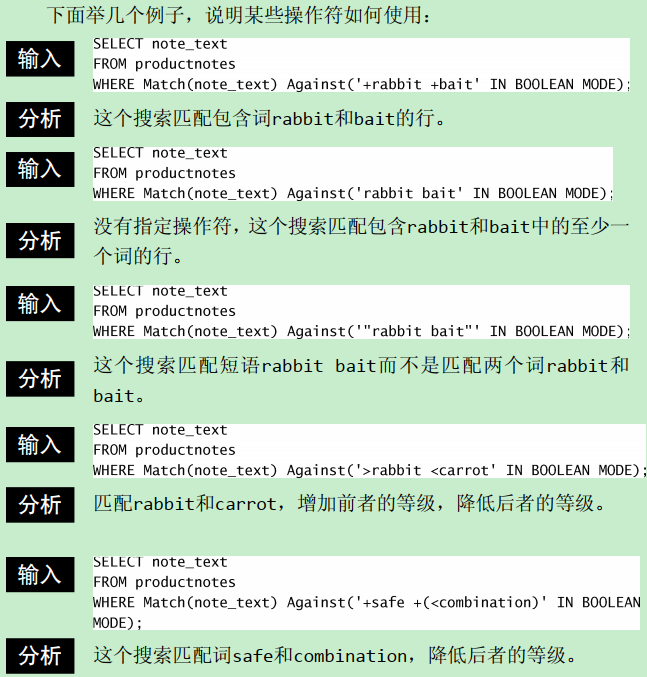

SQL必知必会简要笔记
一、全局语句
DESCRIBE tableName
显示表的定义
*SHOW CREATE DATABASE** databaseName 或 SHOW CREATE TABLE tableName
显示创建数据库或创建表时的语句
SHOW GRANTS
显示授权用户的安全权限
SHOW ERRORS 和 SHOW WARNINGS
显示服务器错误和警告信息
二、简单查询–SELECT
1. 单列查询
1 | SELECT |
2. 多列查询
1 | SELECT |
3. 通配符查询
性能不行
1 | SELECT |
4. DISTINCT 去重
DISTINCT 是作用于 SELECT 所有列的, 即只能有一个DISTINCT
1 | SELECT DISTINCT |
5. LIMIT 查询
第一行是从0开始
1 | SELECT |
6. ORDER BY 排序
排序的列不必要是SELECT的所选的列，可以排序多个列，默认升序，降序使用DESC
1 | SELECT |
结合ORDER BY 和 LIMIT 返回查询的最小值或最大值
1 | SELECT |
三、过滤查询–WHERE
1. WHERE 操作符
| 操作符 | 说明 |
|---|---|
| IN | 逐个匹配 |
| AND | 和 |
| OR | 或 |
| NOT | 否定 |
| IS NULL | 为 NULL |
| LIKE | 模式匹配 |
| = | 等于 |
| <> | 不等于 |
| != | 不等于 |
| < | 小于 |
| <= | 小于等于 |
| > | 大于 |
| >= | 大于等于 |
| BETWEEN | 在指定的俩个值之间 |
2. BETWEEN 查询
BETWEEN 使用AND 连接俩个值，匹配的结果包含 等于 这俩个值
1 | SELECT |
3. AND 和 OR 顺序
同时使用 AND 和 OR 注意 AND 的优先级比较高
4. % 和 _ 通配符
% 可以匹配0个， 1个，或多个，但不匹配NULL
尽量保持不在左边使用通配符，性能较差
1 | SELECT |
*_ 值匹配一个字符，有且必须只有一个* **
5. 正则匹配
使用 REGEXP 关键字，默认不区分大小写，可使用 BINARY 关键字匹配大小写
1 | SELECT |
测试正则表达式，返回值为0或1，1表示匹配成功
1 | SELECT |
6. CONCAT( ) 和 TRIM( )
1 | SELECT |
7. 时间函数
| 函数 | 说明 |
|---|---|
| AddDate() | 增加一个日期（天、周等） |
| AddTime() | 增加一个时间（时、分等） |
| CurDate() | 返回当前日期 |
| CurTime() | 返回当前时间 |
| Date() | 返回日期时间的日期部分 |
| DateDiff() | 计算两个日期之差 |
| Date_Add() | 高度灵活的日期运算函数 |
| Date_Format() | 返回一个格式化的日期或时间串 |
| Day() | 返回一个日期的天数部分 |
| DayOfWeek() | 对于一个日期，返回对应的星期几 |
| Hour() | 返回一个时间的小时部分 |
| Minute() | 返回一个时间的分钟部分 |
| Month() | 返回一个日期的月份部分 |
| Now() | 返回当前日期和时间 |
| Second() | 返回一个时间的秒部分 |
| Time() | 返回一个日期时间的时间部分 |
| Year() | 返回一个日期的年份部分 |
四、聚合函数
1. 五个函数
| 函数 | 功能 |
|---|---|
| AVG() | 返回某列的平均值 |
| COUNT() | 返回某列的行数 |
| MAX() | 返回某列的最大值 |
| MIN() | 返回某列的最小值 |
| SUM() | 返回某列值之和 |
2. 注意点
AVG( ) 只作用于单列上，多列要使用多次AVG( )，且忽略NULL行
*COUNT() 计算表中所有行包括NULL，COUNT(column) 忽略NULL值**
DISTINCT 关键字可以作用于所有聚合函数，但有几点要注意：
- DISTINCT 只能作用于 COUNT(colum) 不能作用 COUNT(*)
- DISTINCT 作用于 MAX() 和 MIN() 上效果和不适用一样
五、数据分组–GROUP BY
1. 注意点
- SELECT 中出现的字段（除聚合函数）都要在 GROUP BY 中出现，包括计算表达式
- 分组中的具有的NULL会自动被分到一组，使用 WITH ROLLUP 可以看到这个效果
1 | SELECT |
2. 过滤分组
使用 HAVING 关键字
3. SELECT 子句顺序
| 子句 | 说明 | 是否必须使用 |
|---|---|---|
| SELECT | 要返回的列或表达式 | 是 |
| FROM | 表 | 仅在从表查询数据时需要 |
| WHERE | 行级过滤 | 否 |
| GROUP BY | 分组 | 仅在按组聚合时需要 |
| HAVING | 分组过滤 | 否 |
| ORDER BY | 排序 | 否 |
| LIMIT | 查询行数限制 | 否 |
六、子查询
七、表联结
1. 内部联结
内部联结也是等值联结，下面是俩种写法
1 | -- 等值联结 |
1 | -- 内联结 |
2. 自联结
自己联结自己，因为列名出现二义性，所有采用别名
1 | SELECT |
3. 外部联结
外部联结有三种，左连接，有链接和
全连接（mysql不支持）
1 | -- 左连接， 左边不许为NULL |
1 | -- 有链接， 右边不许为NULL |
八、组合查询
1. UNION 和 UNION ALL
并操作，多个 SELECT 查询的列必须一样，但顺序不要求
UNION 默认会去除重复的行，而 UNION ALL 不会
对UNION 结果进行排序，只需要将排序语句写在最后一个 SELECT 语句
九、全文搜索
1. 创建全文搜索索引
mysql 俩个常用引擎 InnoDB （不支持全文搜索），MyISAM（支持全文搜索），只能定义再char、varchar和text的字段
使用 FULLTEXT 创建索引，在导入数据到一个新表时，先去除 FULLTEXT 后面再添加；会减少每行导入建立索引的时间
1 | -- 创建 |
2. 进行全文搜索
主要使用Match( ) 和 Against( ) 俩个函数
- Match( ) 指定被搜索的列，值必须和FULLTEXT 定义的一样
- Against( ) 指定要使用的搜索表达式
1 | SELECT |
3. 查询扩展
1 | SELECT |
4. 布尔搜索
1 | SELECT |
- 全文本布尔操作符
| 布尔操作符 | 说明 |
|---|---|
| + | 包含，词必须存在 |
| - | 排除，词不必存在 |
| > | 包含，且增加等级值 |
| < | 包含，且减少等级值 |
| ( ) | 把词组成句子，视为一个整体 |
| ~ | 取消一个词的排序值 |
| * | 词尾通配符 |
| “ “ | 定义一个短语 |
- 操作符使用例子

十、插入数据
十一、更新数据
十二、删除数据
1. 更快的删除
如果表里的所有数据，使用TRUNCATE TABLE 比使用 DELETE 更快，实际上是删除表再重新创建一个
十三、创建表
1. 注意点
- AUTO_INCREMENT 可以手动赋值（赋值未使用的唯一值），接下来会从此值开始自增
- **获取自增的值，使用 SELECT last_insert_id( ) **
2. 常见的引擎
外键不能跨引擎
InnoDB 可靠的事务处理引擎
MEMORY 功能上等同于 MyISAM，但数据是存储在内存中的，速度很快，适合川建临时表
MyISAM 性能极高的引擎，支持全文本搜索，但不支持事务处理
十四、修改表
十五、存储过程
1. 创建存储过程
参数有三个方向
- OUT
- IN
- INOUT
1 | CREATE PROCEDURE productpricing ( |
2. 调用存储过程
参数使用必须以 @ 开始
1 | CALL productpricing ( |
十六、游标
1. 例子
1 | CREATE PROCEDURE processorders () |